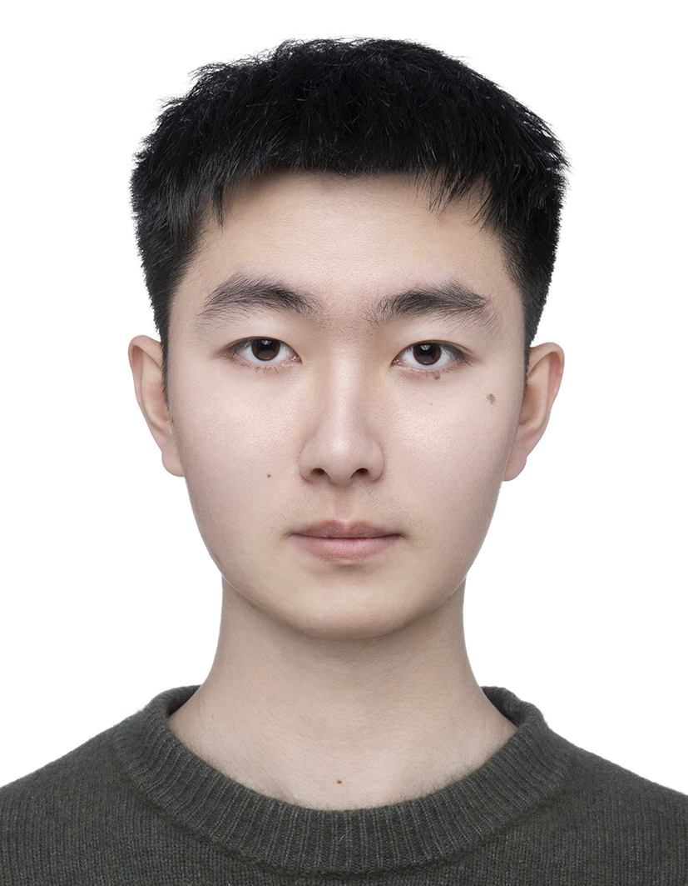

|
Jiaming Huang (黄佳铭)
I am a 4th-year undergraduate student at Xi’an Jiaotong-Liverpool University (XJTLU).
I currently serve as a student representative for bioinformatics on the Student-Staff Liaison Committee (SSLC) committee at the Department of Biosciences and Bioinformatics of XJTLU. I have also served as a student ambassador at the university level, supporting university enrollment activities.
Email /
CV /
Google Scholar /
Linkedin /
Github
|

|
|
Research
Standing at the intersection of AI and the explosion of biomedical data, I believe that cancer research has reached a turning point. Throughout my undergraduate years, I dedicated to transforming biomedical data into predictive tools that benefited cancer research, focusing on epigenetic modification, biomedical image, and gene regulatory network.
|
|
Publications
|
Domain-knowledge enabled ensemble learning of 5-formylcytosine (f5C) modification sites
Jiaming Huang#, Xuan Wang#, Rong Xia#, Dongqing Yang, Jian Liu, Qi Lv, Xiaoxuan Yu, Jia Meng, Kunqi Chen, Bowen Song*, Yue Wang*
Computational and Structural Biotechnology Journal (CSBJ), Volume 23, December 2024, Pages 3175-3185
codes /
paper /
webserver
|
Interpretable deep cross networks unveiled common signatures of dysregulated epitranscriptomes across 12 cancer types
Rong Xia, Xiangyu Yin, Jiaming Huang, Kunqi Chen, Jiongming Ma, Zhen Wei, Jionglong Su, Neil Blake, Daniel J. Rigden, Jia Meng, Bowen Song
Molecular Therapy — Nucleic Acids (MTNA), Volume 35, Issue 4, 10 December 2024, 102376
paper
|
Domain-derived knowledge enabled machine learning and functional characterization of cancer-associated RNA methylation sites
Zeyu Chen#, Yuqi Liu#, Jia Meng#, Jiaming Huang, Xuan Wang, Xiangyu Yin, Wei Zhong*, Gang Tu*, Yongshuang Xiao*
BMC Bioinformatics, Volume 27, Article number 66, 2026
codes /
paper /
webserver
|
|
Posters
|
Ensemble learning enabled classification of breast cancer with shear wave elastography images
Jiaming Huang, Kunhou Zhou, Yingdan Hu, Zhaochen Liu, Xiaochuan Tian, Lintao Zhang
Presented at 2024 XJTLU SURF Poster Fair, winning the "Student-Nominated Best Poster" Prize (Awarded to top 15 Posters out of 414 Posters)
codes /
poster /
webserver /
certificate /
award
|
Deep learning enables cross-state image restoration through a flexible multimode fibre
Jiaming Huang, Fuyu Gu, Jianling Qian, Zihan Yu, Lucheng Wang, Xiuqi Tang, Wanzhe Zhang, Jiahao Zhang, Yufan Shi, Jiadong Yu, Yao Song, Chenxu Zhang
Presented at 2023 XJTLU SURF Poster Fair
poster /
certificate
|
|
“Big Data Analysis” Kaggle Competition (rank 1st/300)
Predicted students' dropout rates and academic success with the highest accuracy in the "Big Data Analysis" Kaggle Competition by utilizing machine learning and deep learning approaches such as 1d-Transformer and LSTM. Awarded the "First Place Award" and the "Best Innovation Award"
awards /
photo
|
|
Global “Dream-Chasers” Entrepreneurial Competition (rank 2nd/30)
Competed against global teams and ranked second place within the “Health + AI” track during the finals. Gained opportunity to collaborate with Haier enterprise, planning for future validation of our breast cancer prediction software “SWEBreCA-Pred” at Haier’s affiliated hospitals at Shanghai
award /
photo
|
|
NVIDIA DPU Programming Course
Leveraged opportunities at the NVIDIA China Developer Day event held at XJTLU by attending an in-person course on DPUs taught by senior NVIDIA developers. Learned that DPUs are designed to offload tasks related to data transmission from the CPU for specialization, and practiced deploying the DOCA framework on the BlueField DPU
certificate
|
|
UCLA Data Science Winter School (A+ grade)
Gained expertise in statistics and machine learning techniques and honed expertise using programming languages such as Python and R
certificate /
transcript
|
|
Honors
China National Scholarship | 2023-2024
Jiangsu Province “Merit Student” | 2023-2024
"JITRI Cup” XJTLU Global “Dream-Chasers” Entrepreneurial Competition Second Prize (rank 2st/30) | 2023-2024
“Big Data Analysis” Kaggle Competition “First Place Award” and “Best Innovation Award” (rank 1st/300) | 2023-2024
XJTLU SURF “Student-Nominated Best Poster” Winner (top 15/414) | 2023-2024
China National Encouragement Scholarship | 2021-2022, 2022-2023
XJTLU Academic Excellence Award | 2021-2022, 2022-2023, 2023-2024
XJTLU “Outstanding Student” | 2021-2022, 2022-2023, 2023-2024
XJTLU “i-star” Award (Encouragement) | 2022-2023, 2023-2024
|
|
Services
Student Representative, Bioinformatics, Department of Biosciences and Bioinformatics, XJTLU | 2023-2024, 2024-2025
Student Ambassador, XJTLU | 2021-2022, 2022-2023, 2023-2024
|
|
Additional Materials
Non-academic honors and Volunteer activity certificates (university, high school and middle school)
annotated version /
blank version
|
|